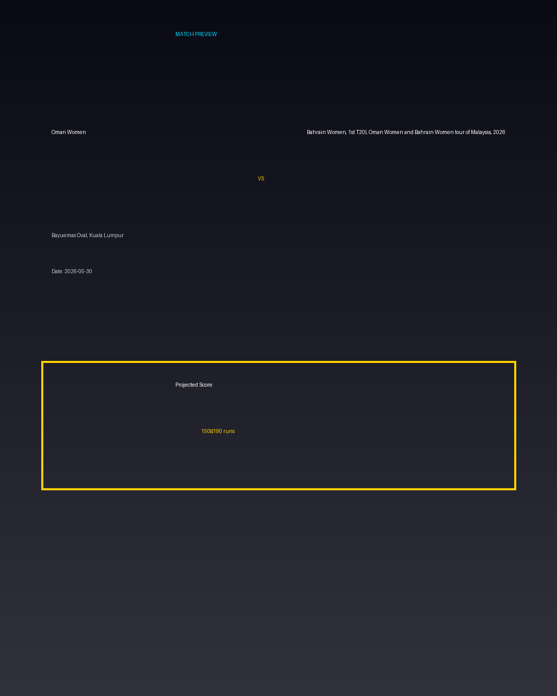

Oman Women vs Bahrain Women, 1st T20I, Oman Women and Bahrain Women tour of Malaysia, 2026
Date: 2026-05-30
Venue: Bayuemas Oval, Kuala Lumpur


Form Guide
Oman Women: 🟩 🟥 🟩 🟩 🟥
Bahrain Women, 1st T20I, Oman Women and Bahrain Women tour of Malaysia, 2026: 🟥 🟩 🟥 🟥 🟩
Pitch Report
Balanced wicket with moderate scoring conditions.
Projected Score
150–190 runs
Key Players
- Oman Women Key Batter — Batsman
- Oman Women Strike Bowler — Bowler
- Bahrain Women, 1st T20I, Oman Women and Bahrain Women tour of Malaysia, 2026 Key Batter — Batsman
- Bahrain Women, 1st T20I, Oman Women and Bahrain Women tour of Malaysia, 2026 Strike Bowler — Bowler
Advanced Win Probability
Oman Women: 64.3%
Bahrain Women, 1st T20I, Oman Women and Bahrain Women tour of Malaysia, 2026: 35.7%
AI Match Prediction
Based on venue conditions, a projected scoring range of 150–190 runs, recent form (with Oman Women appearing slightly stronger), and the pitch profile ('Balanced wicket with moderate scoring conditions.'), this matchup appears to present Oman Women entering as clear favorites. Early momentum and top-order execution will likely determine the winner.
